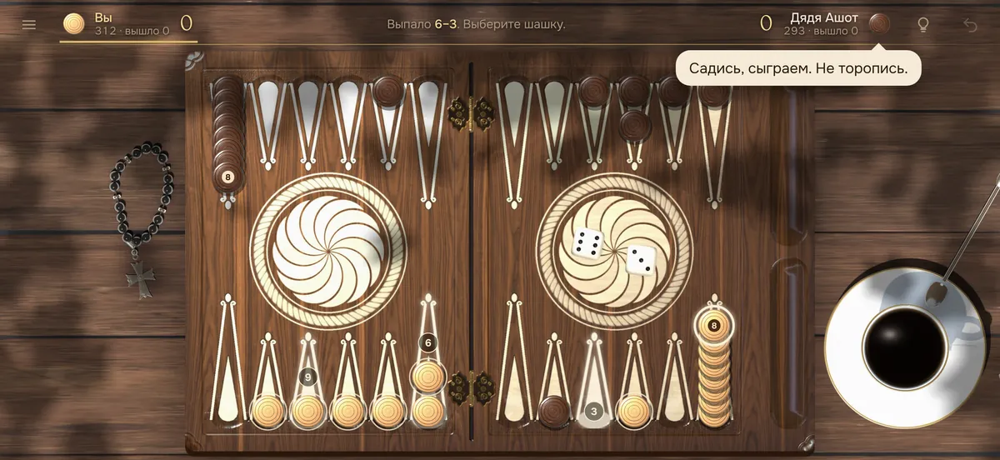
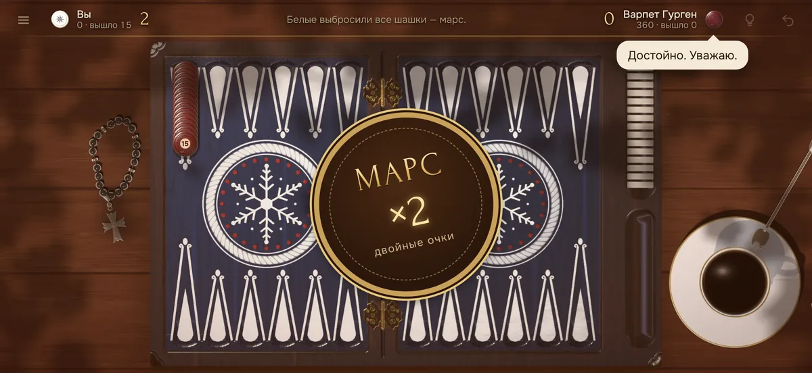
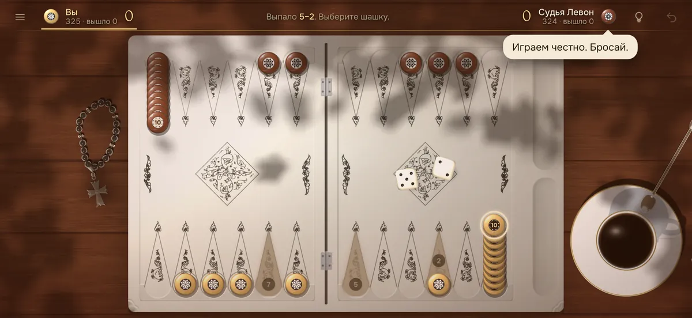

Длинные нарды: правила игры
Длинные нарды — самый популярный вариант игры на Кавказе и в Армении. Бить шашки здесь нельзя: побеждает тот, кто умнее строит заборы и быстрее приводит шашки домой. Ниже — все правила простыми словами и советы для начинающих.

Доска и расстановка
Доска состоит из 24 пунктов (треугольников), по 6 в каждой четверти. У каждого игрока 15 шашек, и в начале все они стоят на одном пункте — на «голове». Белые начинают справа снизу, чёрные — слева сверху, то есть по диагонали друг от друга.
Обе стороны ходят против часовой стрелки и проходят всю доску по кругу. Дом белых — правая верхняя четверть, дом чёрных — левая нижняя.
Как ходить
- Игроки по очереди бросают два кубика. Каждое число — это ход одной шашки на столько пунктов вперёд.
- Числа кубиков играются отдельно: одной шашкой на одно число, другой — на другое. Можно сыграть оба числа одной шашкой подряд, если промежуточный пункт свободен.
- Дубль (одинаковые числа) играется четыре раза: при 3‑3 — четыре хода по 3.
- Если можно сыграть оба кубика — играть обязательно оба. Если только один — нужно сыграть больший. Если ходов нет — ход пропадает.
Главные запреты
Бить нельзя
На пункт, где стоит хотя бы одна чужая шашка, вставать нельзя — он закрыт.
С головы — одна шашка за ход
Исключение — самый первый бросок: при 6‑6, 4‑4 или 3‑3 с головы можно снять две шашки, потому что иначе дубль не сыграть.
Нельзя глухой забор из шести
Нельзя ставить заграждение из 6 занятых пунктов подряд, если впереди него нет ни одной шашки соперника: это полностью запирало бы его.
Выброс и победа
Когда все 15 шашек в доме, их можно выбрасывать с доски: шашку с пункта, номер которого выпал на кубике (считая от края доски). Если выпало больше, чем нужно самой дальней шашке, можно выбросить её.
| Итог | Когда | Очки |
|---|---|---|
| Победа | вы выбросили все шашки первым | 1 |
| Марс | у соперника к этому моменту не выброшено ни одной шашки | 2 |

Как называют броски
Во дворах Еревана и Тбилиси броски называют по-персидски: ек (1), ду (2), се (3), джахар (4), беш (5), шеш (6). Отсюда «шеш-беш» — 6 и 5, «ду-шеш» — две шестёрки, «се-ек» — 3 и 1.
Советы начинающим
- Не держите всё на голове. Чем раньше шашки разойдутся по доске, тем больше вариантов хода.
- Стройте заборы перед соперником. Три-четыре занятых пункта подряд на его пути сильно тормозят его шашки.
- Занимайте свой «шестой» пункт. Пункт рядом с домом соперника — удобная опора для перехода.
- Считайте дорогу. Сумма пунктов, которые осталось пройти всем шашкам, подскажет, кто впереди в гонке.

Частые вопросы
Можно ли бить шашки в длинных нардах?
Нет. В длинных нардах шашки не бьют: пункт, где стоит хотя бы одна шашка соперника, закрыт для хода.
Сколько шашек можно снять с головы?
Одну за ход. Исключение — первый бросок 6‑6, 4‑4 или 3‑3: тогда можно снять две.
Что такое марс в нардах?
Марс — двойная победа: вы выбросили все 15 шашек, а соперник не успел выбросить ни одной.
Что делать, если ход невозможен?
Если ни одним кубиком сыграть нельзя, ход пропадает. Если можно сыграть только один — играется больший.
Где сыграть в длинные нарды онлайн бесплатно?
В игре «Нарды» — прямо в браузере на телефоне или компьютере, без регистрации: с компьютером (шесть соперников разной силы), вдвоём на одном телефоне или с другом по ссылке.